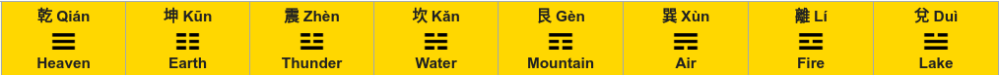
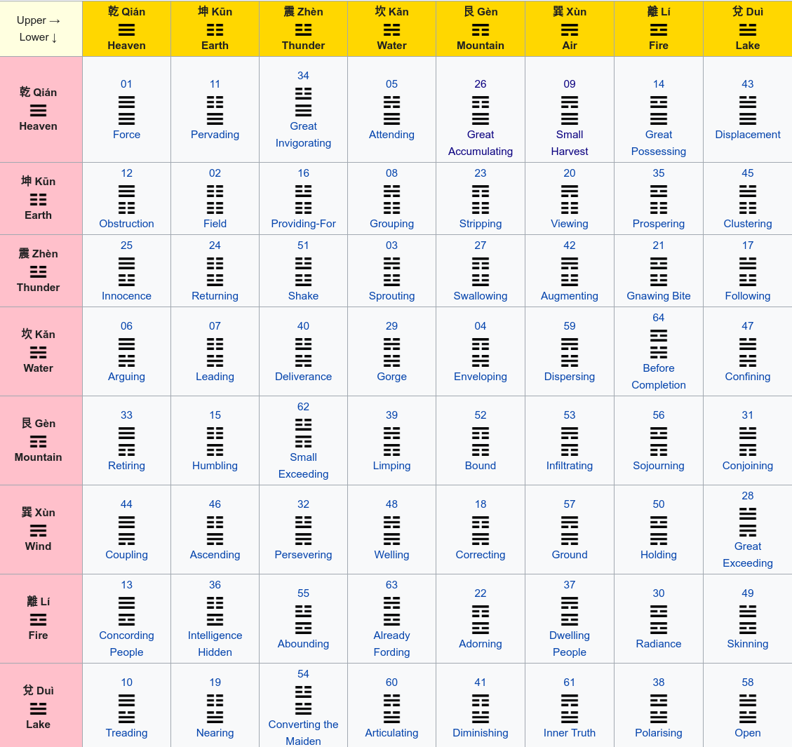

Exam - Mon 06, Sep 2021¶
Scientific Programming - Data Science Master @ University of Trento
Part A - I CHING Divination¶
Open Jupyter and start editing this notebook exam-2021-09-06.ipynb
The I Ching, or Book of Changes, is a chinese divination manual and philosophical text which is believed to be one of the world’s oldest books, dating from over 3,000 years ago.
The great mathematician Gottfried Wilhelm Leibniz (1646 - 1716) is considered the first information theorist, and extensively documented the binary numeral system. Leibniz was also interested in Chinese culture, and saw in the I Ching diagrams showing solid and broken lines called yin and yang, which progressed in a sequence: that was unmistakably a binary encoding.
You will parse a dataset of hexagrams and develop a divinator software which will determine the outcome of your exam.
Data source: Wikipedia, July 2021, Bagua page
Yin and yang: Yin and yang are represented by lines:
name |
line |
bit |
|---|---|---|
yin |
|
0 |
yang |
|
1 |
Trigrams: Different constructions of three yin and yang lines lead to 8 trigrams. We can express a trigram as a sequence of bits, reading lines from bottom to top. For example Fire is 101, Thunder is 100.

Hexagrams: Combining a lower trigram with an upper trigram leads to 64 hexagrams. Each hexagram can be represented as a sequence of bits and the outcome of a divination. For example trigrams Fire (lower) and Thunder (upper) gives outcome hexagram Abounding: 101100

A1 load_db¶
Parse iching.csv and output a dictionary mapping each sequence to a dictionary with all the information you can extract. Use CSV reader.
in headers and first column you will find a bit sequence like
011in body cells, you will not find a bit sequence: you will have to determine it according to the corresponding tri-sequences from the header and first column
note for hexagrams you must extract only
name-en, ignore the decimal numberscomplete expected output is in file expected_iching_db.py
[2]:
import csv
def load_db(filepath):
raise Exception('TODO IMPLEMENT ME !')
iching_db = load_db('iching.csv')
iching_db
EXERPT:
{'111': {'name-en': 'Heaven', 'name-ch': '乾', 'spelling': 'Qián'}
'000': {'name-en': 'Earth', 'name-ch': '坤', 'spelling': 'Kūn'}
'100': {'name-en': 'Thunder', 'name-ch': '震', 'spelling': 'Zhèn'}
'010': {'name-en': 'Water', 'name-ch': '坎', 'spelling': 'Kǎn'}
'001': {'name-en': 'Mountain', 'name-ch': '艮', 'spelling': 'Gèn'}
'011': {'name-en': 'Air', 'name-ch': '巽', 'spelling': 'Xùn'}
'101': {'name-en': 'Fire', 'name-ch': '離', 'spelling': 'Lí'}
'110': {'name-en': 'Lake', 'name-ch': '兌', 'spelling': 'Duì'}
'111111': {'name-en': 'Force'}
'111000': {'name-en': 'Pervading'}
'111100': {'name-en': 'Great Invigorating'}
'111010': {'name-en': 'Attending'}
'111001': {'name-en': 'Great Accumulating'}
'111011': {'name-en': 'Small Harvest'}
'111101': {'name-en': 'Great Possessing'}
.
.
}
[4]:
# EXECUTE FOR TESTING
from pprint import pformat; from expected_iching_db import expected_iching_db
for seq in expected_iching_db.keys():
if seq not in iching_db: print('\nERROR: MISSING sequence', seq); break
for k in expected_iching_db[seq]:
if k not in iching_db[seq]:
print('\nERROR at sequence', seq,'\n\n MISSING key:', k); break
if expected_iching_db[seq][k] != iching_db[seq][k]:
print('\nERROR at sequence', seq, 'key:',k)
print(' ACTUAL:\n', pformat(iching_db[seq][k]))
print(' EXPECTED:\n', pformat(expected_iching_db[seq][k]))
break
A2 divine¶
A divination is done by flipping 3 coins to determine the bottom trigram (bottom up order), flipping other three coins for the upper trigram (again bottom up order), and then the union gives the resulting hexagram. Write a function that PRINTS the process as in the example and RETURNS a string of bits representing the resulting hexagram
HINT: to flip coins use random.randint(0,1)
WARNING: DOUBLE CHECK THE ORDER IN WHICH LINES ARE VISUALIZED!
[5]:
import random
def divine(iching, question):
#THE SEED DETERMINES FOLLOWING randint RESULTS
random.seed(109) # Abounding
# Thunder
# Fire
#IMPORTANT: try also this seed to check lines visualization order
#random.seed(1)
#
# Infiltrating 001011
# Mountain ---
# ---
# - -
# Air ---
# - -
# - -
raise Exception('TODO IMPLEMENT ME !')
divination = divine(iching_db, "Will I pass the exam?")
print("\nReturned:", divination)
Dear stranger, welcome to SCIPROG I CHING 易經 DIVINATOR
Tell me your question...
Will I pass the exam?
The coin says 'heads' : we get a yang ---
The coin says 'tails' : we get a yin - -
The coin says 'heads' : we get a yang ---
The sacred bottom trigram is:
Fire
---
- -
---
The coin says 'heads' : we get a yang ---
The coin says 'tails' : we get a yin - -
The coin says 'tails' : we get a yin - -
The sacred upper trigram is:
Thunder
- -
- -
---
The final response hexagram is...
Abounding
- -
- -
---
---
- -
---
Returned: 101100
A3 plot_divination¶
Given a divination as a string of bits, plot the divination.
first draw the lines, then the rest if you have time.
make it fancy with these examples
to center text you can use these parameters:
ha='center', va='center'

[6]:
%matplotlib inline
import matplotlib.pyplot as plt
def plot_divination(iching, question, divination):
raise Exception('TODO IMPLEMENT ME !')
plot_divination(iching_db, "Will I pass Sciprog exam?", '101100') # Abounding
#plot_divination(iching_db, "Will I pass Sciprog exam?", '111011') # Small Harvest
#plot_divination(iching_db, "Will I pass Sciprog exam?",'001011') # Infiltrating
Part B¶
Open Visual Studio Code and start editing the folder on your desktop
B1 Theory¶
Write the solution in separate ``theory.txt`` file
B1.1 Complexity¶
1.A: Given a list L of \(n\) elements, please compute the asymptotic computational complexity of the my_fun function, explaining your reasoning.
def my_fun(L):
tmp = [1 for x in L]
n = sum(tmp)
for i in range(1, int(n/2)+1):
if L[i-1] != L[-i]:
return False
else:
return True
1.B: Do you have any idea to improve this code a little bit?
B1.2 nlogn¶
What do we mean when we say that an algorithm has asymptotic computational complexity \(O(n logn)\)? What do we have to do to prove that an algorithm has asymptotic computational complexity \(O(nlogn)\)?
B2 Train race¶
An important train race is taking place in Steam Land. Each train has a length and a velocity. A train is represented as a sequence of asterisks. A train path is a list which holds all the train asterisks, and, if the train has moved m positions so far, the path also holds m dashes - before the asterisks.
Open the file train_race.py and implement methods from class TrainRace, in particular:
def step(self):
""" Steps the simulation by moving each train toward right
by a number of cells given by its velocity.
*** MUST run in O(v) where v is the sum of all velocities
*** Complexity MUST *NOT* depend on train length nor dashes length
*** For simplicity, ASSUME velocity is always
less or equal than train length
******** HAVE YOU READ THE REQUIREMENTS ABOVE ? ********
"""
WARNING: AVOID EXPENSIVE LIST METHODS / OPERATORS
Passing tests is easy, the hard part is to make it fast: will your program run fast with a train of one million asterisks? And with a train which made a million steps?
Testing: python3 -m unittest train_race_test.VelocityLessOrEqualThanTrainSizeTest
Extra (not required during the exam): make it work also when velocity can be greater than train size, then test with:
python3 -m unittest train_race_test.VelocityGreaterThanTrainSizeTest
Example:
[8]:
from train_race_sol import *
#train lengths velocities
tr = TrainRace([5,3,6,3], [2,1,3,2])
[9]:
tr.get_paths()
[9]:
[['*', '*', '*', '*', '*'],
['*', '*', '*'],
['*', '*', '*', '*', '*', '*'],
['*', '*', '*']]
[10]:
tr.step() # returns NOTHING!
[11]:
tr.get_paths()
[11]:
[['-', '-', '*', '*', '*', '*', '*'],
['-', '*', '*', '*'],
['-', '-', '-', '*', '*', '*', '*', '*', '*'],
['-', '-', '*', '*', '*']]
[12]:
tr.step()
[13]:
tr.get_paths()
[13]:
[['-', '-', '-', '-', '*', '*', '*', '*', '*'],
['-', '-', '*', '*', '*'],
['-', '-', '-', '-', '-', '-', '*', '*', '*', '*', '*', '*'],
['-', '-', '-', '-', '*', '*', '*']]
B3 linked algebra¶
Open linked_list.py and edit this method:
def linalg(self):
""" Assume nodes hold data as a string "kc" where k is a single digit
and c any character.
MODIFY the linked list by stripping the k from original nodes,
and inserting k-1 new nodes next to each node.
- ASSUME every k is >= 1
- MUST execute in O(s) where s is the sum of all k found.
"""
Testing: python3 -m unittest linked_list_test
Example:
[15]:
from linked_list_sol import *
ll = LinkedList()
ll.add('2c')
ll.add('5b')
ll.add('3a')
print(ll)
LinkedList: 3a,5b,2c
[16]:
ll.linalg() # returns NOTHING!
[17]:
print(ll)
LinkedList: a,a,a,b,b,b,b,b,c,c
with 3 nodes modified and 7 new nodes inserted